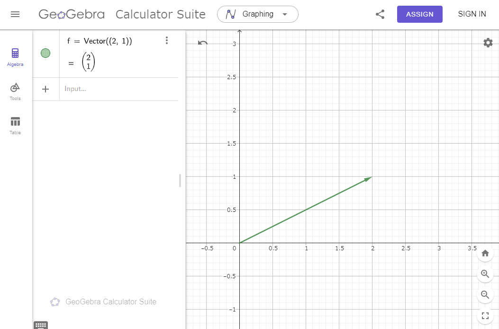
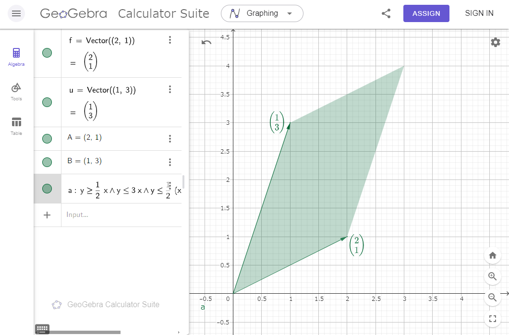

簡単にGeoGebraの使い方について確認しておきます。ここではWeb版GeoGebraを用いて説明していこと思います。(多分、アプリ版はそんな変わらないと思います。)
あと、使ってみて数時間で書いているので、紹介している方法が最適とは限りません。
基本的に左側の欄に数式を入力していって図を表示させる感じになります。
ベクトルは「Vector((a,b),(c,d))」と書くと、点\((a,b)\)から点\((c,d)\)へのベクトルが出力されます。

色とかが気になるなら、ベクトルを右クリックして少し設定をいじりましょう。


次は領域の塗りつぶしをしましょう。これについては、すごい面倒な方法しか思いつかなかったので、それについて紹介します。
領域を書くときは、基本的に不等式で書きます。例えば、直線\(y=x/2\)よりも上を塗りたいなら、そのまま「\(y\geq x/2\)」と入力すればよいです。(等号付きの不等式は「>=」とすればうまくいくはずです。)

平行四辺形はこれらの重ね合わせでどうにか実現します。頑張って直線を4つもってきて、それらを\(\land\)(入力は「&&」)で結べば下図のようになるはずです。表示するとき、色とスタイルの項目をいじると見た目が良くなります。(スタイルのところでは、直線が見えなくなるようにしましょう。)

以上の操作で大体の図は書けるんじゃないかなと思います。あとは軸とかの見た目を整えれば、完成です！

(軸は設定で消して、新しくベクトルを引き直しました。軸のラベルをLaTeXの文字にしたかったので。)